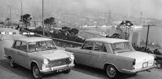

Presentat a la Fira de Mostres de Barcelona el juny de 1963, comença la seva producció el novembre d'aquell mateix any. A la gamma SEAT substitueix el SEAT 1400 "C" del que diferia en mecànica i detalls de presentació. Tots dos formen part, juntament amb els Fiat 1800/2100 i Fiat 1500L/1800B/2300, del tipus 112 de Fiat.
El projecte del Fiat "sei posti", decididament gran i amb motors de més de quatre cilindres s'origina el 1954 per substituir el Fiat 1400/1900 que havia estat el primer Fiat amb carrosseria autoportant i que mantenia encara vigència per la seva gran mida interior i confort de marxa.

Pel que sembla, va ser precisament el compromís amb SEAT d'enviar l'equip de fabricació del nou model al llarg del 1957, cosa que va accelerar el procés, explicant en part les importants diferències amb el 1800 B presentat dos anys després.